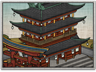

Requires
- Buildings:

- Arts:

- Religions:

Enables
- Buildings: 
- Units:


Spawned Garrisons
- Units:

Basic Building Statistics (can be modified by difficulty level, arts, skills, traits and retainers)
- Cost: 4000
- +3 happiness for the Ikko population
- Spreads radical Ikko beliefs to neighbouring provinces (+5 religious zeal)
- Converts the populace into followers of the Ikko faith (+7 religious zeal)
- Enables recruitment of Rank 1 Ikko monks
Clan Effects
- Improves the rate at which chi arts are mastered: +6%
- Each Ikko temple chain building enables you to sustain one additional Ikko monk (to a maximum of 5)
Description
Training sharpens the wits and hardens the spirit.
This is a safe haven for religious reflection, worship and, most importantly, training. The people can also be protected from surrounding clans as they vie for power and land. The monks here can concentrate on spreading the faith, converting the uneducated, and acting as a focus for the already faithful. The construction of a fortified monastery will inspire peasants in neighbouring provinces too: there is another way, rather than submitting to the cruelty of the daimyo and their samurai armies! Jodo Shinshu, or Pure Land Buddhism, was an inclusive set of teachings which proposed that anyone could be guaranteed salvation and rebirth. There was no need to become a monk, or spend hours in meditation. Such activities simply weren't an option for the ever-toiling peasantry, so a faith that gave them hope and the promise of freedom had a definite appeal. The common people were often trapped between warring clans, and Jodo Shinshu offered them the chance of something better, the chance to be without warlords. The Ikko Ikki were the direct result of Jodo Shinshu and the violence of the times, the chance for non-samurai to have a better life for themselves. This building can only be constructed by the Ikko Ikki and cannot be used by any other clan.